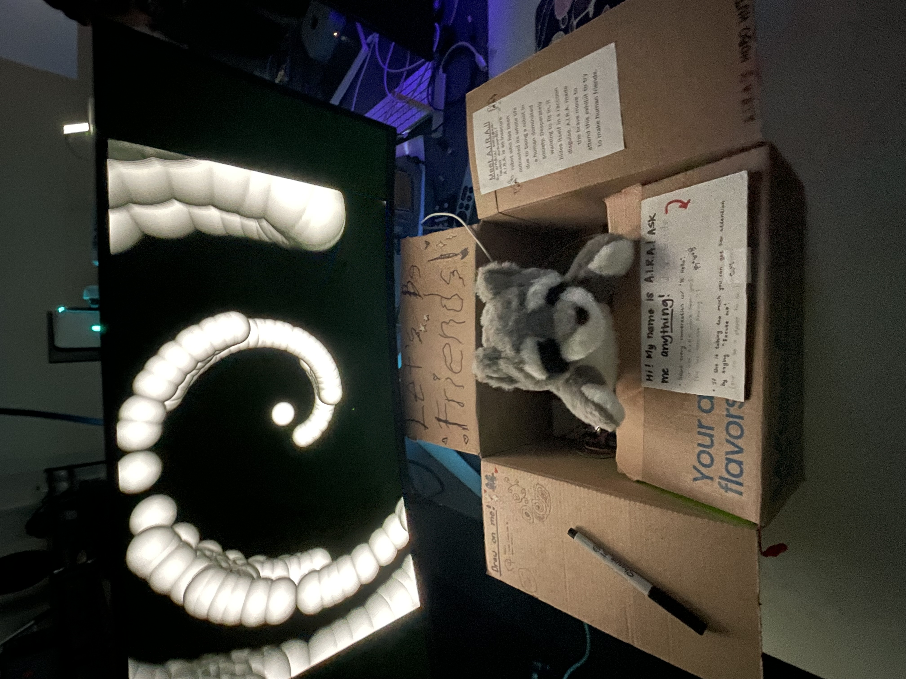

The Artificial Intelligence Raccoon Automaton (AIRA) is an Arduino and LLM-powered robot that is able to interact with its audience through sound, specifically human speech. This robot is capable of holding a proper conversation, along with idly humming and speaking to entertain its audience. By saying “hi hello” to get the robot’s attention, it will respond to whatever the user says. In the case that the robot is left alone, it will say certain lines periodically. AIRA will reply and speak based on its insecure personality, using terms such as, “I hope this is satisfactory” and various self-deprecating phrases. A MG996R servo is utilized to make AIRA move at random intervals.
Lastly, a reactive, audiovisual environment accompanies AIRA. Using TouchDesigner, the real-time projection displays a mosaic of monochrome dots, generated by the layered, glitchy soundtrack “Be a Body” by Grimes. These distorted visuals function as an emotional mirror externalizing AIRA’s self-doubt, hesitancy, and programmed longing to be accepted by its audience.
AIRA’s design encourages people to ponder whether it is possible for robots to gain consciousness or feel emotions. Beyond its practical applications, what will it take for AI to be truly woven into the social sphere and gain widespread acceptance? Aligning this inquiry with our design, the robot will hide its identity under an animalistic puppet, as if attempting to make itself more approachable to human society by warping its appearance to that of a cute, cuddly plush instead of a foreign robot. Of course, the robot’s attempt is not perfect–its true identity will peer through. AIRA’s insecure personality serves as a double entendre, illustrating how the robot is unfamiliar with human customs and yet tries to garner sympathy with its self-deprecating nature. Lastly, the projection visuals of swirling, muted dots and rough textures mirrors AIRA’s emotional hesitancy, expressing its struggle for belonging.
Collaborators
Melva Deng, UCSB
Aliyah Miller, UCSB